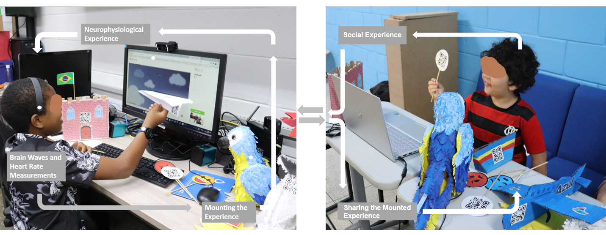

A case study of a system for emotional contagion
The emotional contagion phenomenon describes how one in-dividual’s emotions can influence the emotional state of others. Behind emotional expressions, a complex and dynamic circuit is triggered in the human mind and body, which involves neurological and physiological reactions. The latest technological advances in literature show studies using EEG (Electroencephalogram) and ECG (Electrocardiogram) to study emotions through human neurological and physiological information. Nevertheless, literature still lacks approaches and systems that address the neurophysiological aspects of emotional experiences, particularly in environments filled with smart devices and other humans, along with their perceptual, cognitive, and sensorimotor information. This article studies the phenomenon of emotional contagion based on the socioenactive perspective as a novel approach that considers the relationship between the human mind, body, and the environment as a unity in the social world. We revisit the emotion contagion phenomena to promote socio-emotional interactions. We built a socioenactive system that uses AI to recognize emotions in people’s neurophysiological information and promote emotional contagion. The socioenactive system comprises a hybrid interface with wearable devices (smartwatches and mind waves) containing input signals from a person’s brain and heart. We designed a socioenactive scenario with a parrot robot to investigate emotional contagion among children participating in a workshop. Our research is evaluated via a case study inviting participants to interact with the socioenactive system. The results show that emotional contagion happens synchronously in remote environments.. The entire research project could be accessed in the following study "Socioenactive Brain-Body Coupling in a Remote Emotional Contagion Experience"
